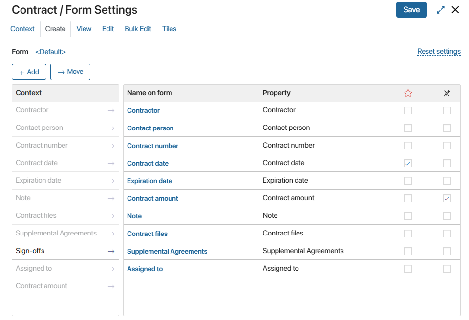
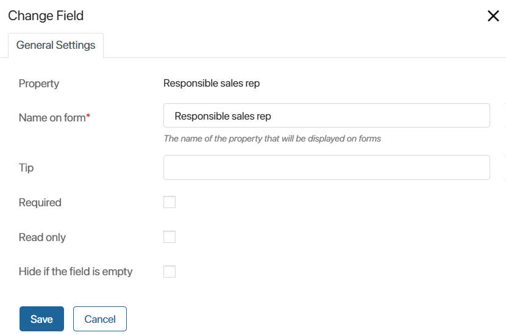
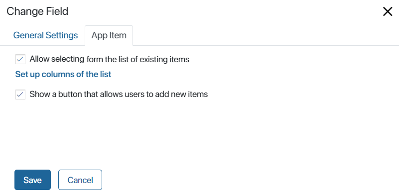
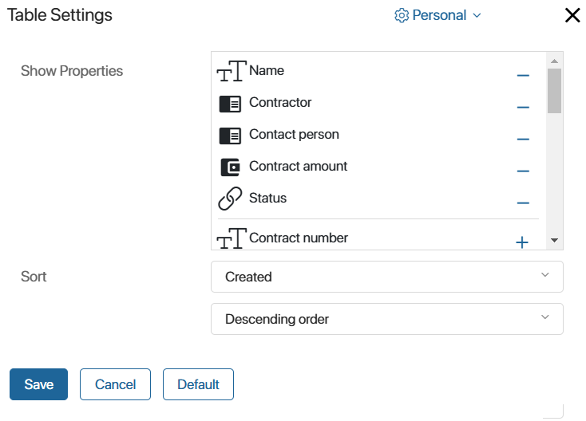
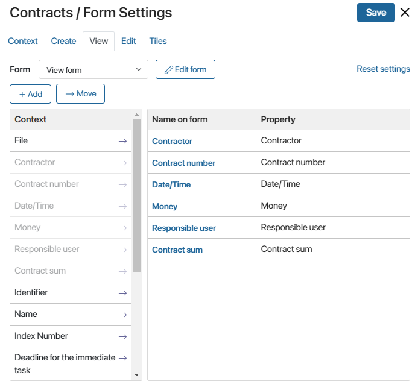
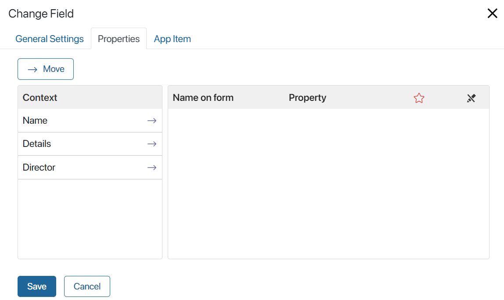
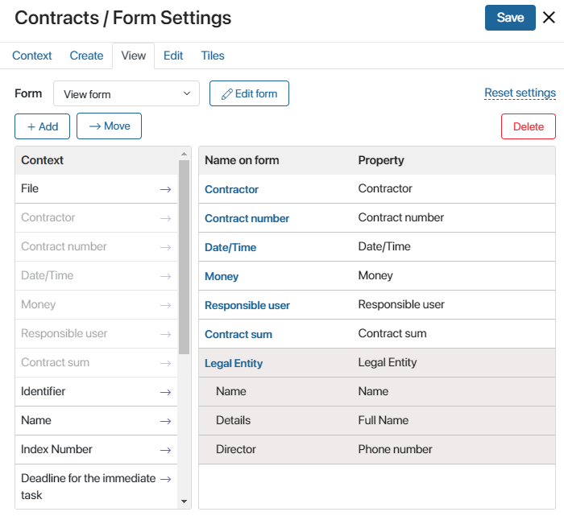
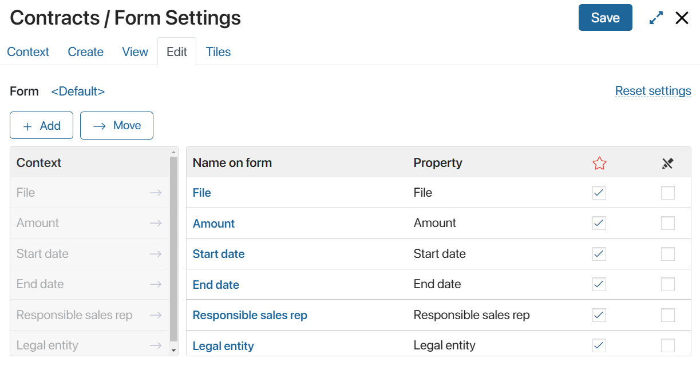

Switch between the Create, View, and Edit tabs to modify the app’s properties, change their order, and configure what each of the app’s forms includes.
Create tab
On this tab, you can set up the creation form of an app item.

- Drag the properties from the Context column to the Name on form column. Each property in the Name on form column stands for a field on the page, which the users will have to fill in when creating a new item.
- To rearrange the fields on the form, user drag-and-drop.
- You can mark properties as required
 and as read-only
and as read-only  .
. - To add a new property, click +Add. The new property will appear in the Context column and on the Context tab.
Display of properties
You can define how the property will look on the page: edit its name, add the tip, and mark the field as required or read‑only.
To do that, click on the property’s name in the Name on form column and edit the parameters in the provided window.

The General Settings tab has the following fields:
- Property. The name that you specified when creating the property. It cannot be changed.
- Name on form*. The name that the users will see on the form. You can change it if needed.
- Tip. Additional information that explains to the users how to fill in the field on the creation page.
- Required. Check this box to make this field a required one.
- Read only. When this box is selected, users will not be able to edit this field on the item creation form.
- Hide if the field is empty. If the checkbox is selected and this field is not filled in, it will not be displayed on the form.
For a field of the App type added to the form:
- To allow users to quickly create an app item using the plus icon, keep the Read only option enabled.
- To allow users to select an existing item of the specified app in the field, disable the Read only option. Go to the App Item tab that appears and configure the field’s display:

- Allow selecting from the list of existing items. By clicking the magnifying glass icon next to the field, users will see a list of all app items in a table format with search by parameters available. Click Set up columns of the list to set the table settings similar to any app page. For example, to search for a contract, add parameters like Name and Contractor, and enable sorting by the Amount field. Then users will see a table of contracts specifying the contractors, and their order in the list will depend on the contract amount. You can also apply the parameters specified by the administrator in the table settings of the app by clicking Default.
 - Show a button that allows users to add new items. The +Create button will appear next to the field. It can be used to add a new item to the specified app.
Read more about the settings for the App field type in Create an app item on the page of another app.
After the creation form is set up, click Save in the upper right corner of the page.
It is possible to hide the names of the fields from the form and instead display only the contents of these fields. This can be set up in the interface designer when editing the form template. To learn more, see Form template.
View tab
On this tab, you can customize the item view page.

The view form is set up in the same way as the creation form. Since users do not need to perform any actions on a view page, the fields on this form cannot be marked as required.
By clicking on the name of the property, you can change some of its parameters. For example, edit the name on the form or add a tip.
App type properties have an additional Properties tab. It displays the context (properties) of the app.
For example, the Legal entity app may have such properties as the Name, Details, and Director.

You can add them to the item view form.

To apply changes to the creation form, click Save in the top right corner.
Edit tab
On this tab, you can customize the item edit page.

This form is configured in the same way as the creation form.
Found a typo? Select it and press Ctrl+Enter to send us feedback